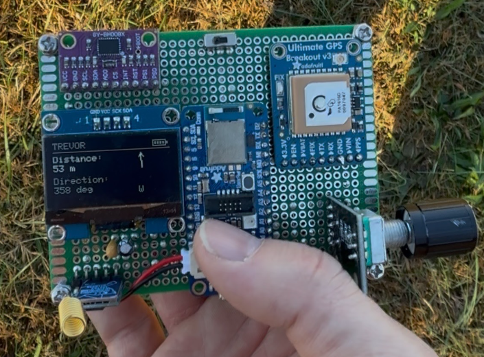

Electrical & Computer Engineering Student
I am passionate about designing and developing electronic and embedded systems, with a focus on hardware/software integration, microcontroller programming, and practical engineering solutions.
View Projects Contact MeDeveloping firmware for microcontroller-based systems using C/C++, peripheral interfaces, and modular software design.
Building responsive embedded systems using finite state machines, interrupts, and non-blocking timing techniques.
Interfacing firmware with sensors, displays, actuators, and physical hardware to create complete embedded systems.

Three-device embedded capstone system enabling off-grid location sharing using GNSS and LoRa communication. Integrates IMU-based directional tracking, an interactive OLED interface, and one-hop packet relaying. Demonstrated communication at 958 m with over 24 hours of battery life.